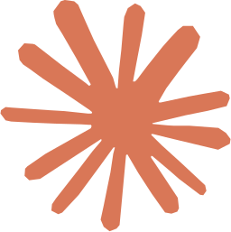
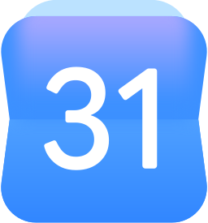

今天的麻煩事
教授來信說下週日要開會。要回信、記行事曆，還要把雲端的資料整理好寄過去。
6-1
一封開會通知，四句話交代完

Claude- Gmail

Google Calendar Google Drive
Google Drive
-
請它找出教授那封信，擬好回信。你看過草稿、按下確認，它才寄出。
-
照信裡的時間和地點，把會議記進 Google 日曆。
-
到雲端硬碟找出兩份資料，匯出成 Excel 和 Word 讓你下載。
-
把進度摘要存回雲端硬碟，再起草下一封信。只存成草稿，不會自己寄。
做完你手上有
一封寄出的回信、日曆上的會議、Excel 和 Word 各一份、雲端硬碟一份進度摘要、Gmail 一封待寄的草稿。
免費版做得到，但很吃用量：我們實測 5 則訊息就用完 5 小時的訊息上限。